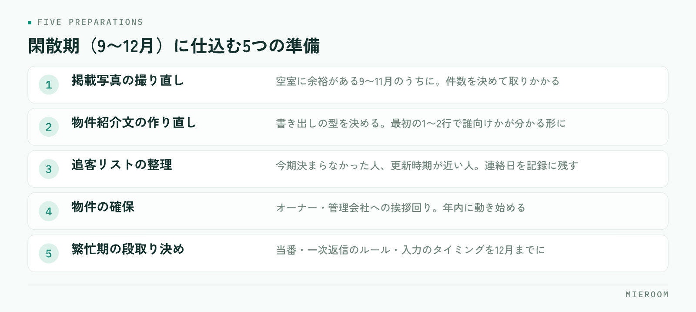

問い合わせが落ち着く時期になると、やることが急に減ったように感じます。ですが、繁忙期の結果は、閑散期にどれだけ仕込めたかでほとんど決まります。9月から12月は、繁忙期に入ると手をつけられなくなる作業を片づけられる、一年で唯一の時期です。
この記事の結論
閑散期にやることは、新しい集客を足すことではなく、繁忙期に判断で止まらない状態を先に作ることです。今期の振り返り → 写真と紹介文の作り直し → 追客リストの整理 → 物件の確保 → 段取り決め、の順に進めます。
閑散期は「休む時期」ではなく「仕込む時期」
繁忙期の忙しさは、作業そのものより「その場で判断しなければならないこと」の多さから来ます。どの物件を先に出すか、誰がどの反響を追うか、写真は足りているか。これらを繁忙期の最中に考えると、接客の時間が削られます。
閑散期にやるべきことは、繁忙期に考えなくて済むように、先に決めておくことです。時期ごとに、できる作業が違います。
| 閑散期（9〜12月） | 繁忙期（1〜3月） | |
|---|---|---|
| 向いている作業 | 見直し・作り直し・決めごと | 反響対応・案内・契約 |
| 写真の撮り直し | できる（空室に余裕がある） | ほぼできない |
| 運用ルールの変更 | できる | 混乱するので避ける |
| 新しい仕組みの導入 | 試す時間がある | 入れた瞬間に止まる |
| 数字の振り返り | じっくり見られる | 見る時間がない |
新しいツールや運用を試すなら、この時期しかありません。繁忙期に入ってから何かを変えると、慣れない操作が接客の妨げになります。
まず、今期の反響と契約を振り返る
仕込みの前に、今期の数字を見ます。見るのは3つだけで構いません。
ひとつ目は、どの媒体から反響が来て、どこから契約になったかです。反響の数が多い媒体と、契約につながった媒体は一致しないことがあります。ここを分けて見ないと、来期の掲載先を決められません。媒体ごとの判断のしかたは広告費のROIを見るにまとめています。
ふたつ目は、反響から来店、来店から契約に、どこで人が減ったかです。反響は取れているのに来店が少ないなら、初動の返信か物件の見せ方。来店はあるのに契約が少ないなら、ヒアリングか提案の内容に原因があります。
みっつ目は、決まらなかった理由です。条件が合わなかったのか、他社で決まったのか、連絡が途絶えたのか。ここが記録に残っていないと、来期も同じ取りこぼし方をします。
細かく分析しようとすると終わりません。上の3つを、メモ書き程度で構わないので紙に書き出してください。大事なのは正確さではなく、来期に変える点を1つか2つ決めることです。
閑散期に仕込む5つの準備
振り返りで見えた課題を、次の5つに落とし込みます。上から順に進めてください。

- 掲載写真の撮り直し（空室に余裕があるうちに）
- 物件紹介文の作り直し（テンプレートを整える）
- 追客リストの整理（今期決まらなかった人、更新時期が近い人）
- 物件の確保（オーナー・管理会社への挨拶回り）
- 繁忙期の段取り決め（当番・返信のルール・入力のタイミング）
この順番には理由があります。写真と紹介文は掲載の土台なので、追客や集客の前に整える必要があります。物件の確保は相手のある話なので、年内に動き始めないと間に合いません。
写真と紹介文は、閑散期にしか直せない
繁忙期に入ると、空室はすぐ埋まり、撮り直しに行く時間もなくなります。写真の撮り直しは、9〜11月のうちにしかできません。
優先するのは、来期に主力として出す物件と、今期に反響が少なかった物件です。全部をやり直そうとすると終わらないので、10件なら10件と決めて取りかかってください。撮る順番と準備は物件写真の撮り方に手順をまとめています。
紹介文は、物件ごとに書き直すのではなく、書き出しの型を決めるのが現実的です。最初の1〜2行で誰に向いた部屋かが分かる形になっていれば、繁忙期の入力が速くなります。書き方は物件紹介文の書き方が参考になります。
追客リストの整理と、物件の確保
今期に決まらなかった見込み客は、条件が変われば動きます。転勤・進学・更新の時期が近い人を抜き出し、いつ連絡するかを決めて記録に残してください。「そのうち連絡する」は、繁忙期に入ると必ず後回しになります。
担当者ごとのメールやSMSの履歴にしか残っていないと、繁忙期に人手を分けたときに引き継げません。閑散期のうちに、誰が誰を追っているかを一覧で見られる形にしておいてください。反響の残し方は反響の管理方法にまとめています。
物件の確保は、オーナーや管理会社との接点づくりです。繁忙期の直前は各社が一斉に動くため、印象に残るのは、それより前に顔を出した会社です。今期にどの物件で決めたか、どんな入居者が決まったかを持って行くと、話が具体的になります。
繁忙期の段取りを、12月までに決めておく
最後に、繁忙期の動き方を決めます。決めるのは次の5つです。
- 反響への一次返信は誰が、何分以内に返すか
- 土日の来店対応の当番をどう組むか
- 反響と来店の記録をいつ入力するか（その場か、閉店前か）
- 申込が入ったときの書類確認の担当は誰か
- 週に一度、何の数字を見て打ち合わせるか
どれも当たり前のことですが、決めずに繁忙期へ入ると、その場の判断で毎回止まります。特に入力のタイミングは、決めておかないと後からまとめて入れることになり、記録が実態とずれていきます。
新しい仕組みを試すなら、12月までに使い始めて、1月には慣れている状態にしてください。繁忙期に入ってからの導入は、ほぼうまくいきません。開業直後の集客と立ち上げについては開業直後の集客も合わせて読んでみてください。
閑散期に広告費を止めてもいいですか？
スタッフが少なく、通常業務だけで手一杯です。何から手をつければいいですか？
繁忙期はいつから準備を始めるのが適切ですか？
まとめ：閑散期の仕込みが、繁忙期の余裕になる
賃貸仲介の閑散期にやることは、新しい集客を足すことではありません。今期を振り返り、写真と紹介文を作り直し、追客リストを整理し、物件を確保し、繁忙期の段取りを決める。この5つを年内に終わらせておくと、1月からは接客に集中できます。
逆に、仕込みをしないまま繁忙期へ入ると、判断のたびに手が止まります。忙しさの正体は、作業量ではなく決めごとの積み残しです。
反響・来店・申込の記録を一か所にまとめ、繁忙期でも入力が続く形にしておきたい場合は、ミエルームが対応しています。デモアカウントの発行と初期設定の代行にも対応していますので、繁忙期に入る前に試しておきたい場合はお気軽にご相談ください。